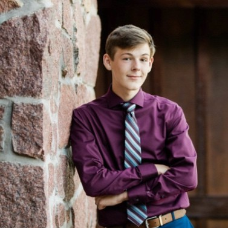

Role: Image Processing & Laser/Camera Implementation
2.7k hour rust gigachad. Main servers include helix 2x monthly main, rustinity 2x quad, reddit us monthly main. Enjoys building, pvp, and GRIEFING clans.
Role: Image Processing & Laser/Camera Implementation
Frequently enjoys the luxury of being rejected by every single job applied to on the planet. Loves to sit in silence in his room, contemplating what went wrong when the coding homework assigned doesn't work. Also likes cats and spending money on 95% off games on Steam and letting them rot in his game library.
Role: Targeting Processor Configuration
Thinks he had an AMD internship - it's just a figment of his imagination. In his free time, he likes to watch the wax melt from burning 15 candles at once in his living room. At first, his neighbors complained because the hallway smelled like smoke, but now they've grown to appreciate his home-made candle scents.
Role: Mount Interfacing & Control Modules
Has the unique ability to do math on the team. This is incredibly important, rare for the ever-estimating engineer, and useful for object detection. Also known as the prolific ECE goblin, and I'm not sure what that means, but do NOT ask him about it.
Role: Motor Mount Design & FPGA Interface
Is a part of the 'Engineers without Borders' club at UW-Madison. But so far, everyone has only seen him WITHIN the borders of the UW campus. A coincidence? I think not. He brings a certain amount of caffeinated skill that is appreciated by the team. Ask him any questions about CS-552, the computer architecture class here - he LOVED it.